ЛАБОРАТОРНАЯ РАБОТА 12
12.1. РЕШЕНИЕ НЕЛИНЕЙНЫХ КРАЕВЫХ ЗАДАЧ ДЛЯ УРАВНЕНИЙ ВТОРОГО ПОРЯДКА МЕТОДОМ ПРИСТРЕЛКИ
Дано уравнение y′′ = F(x,y,y′). (12.1)
Требуется найти решение этого уравнения на отрезке [a,b] , удовлетворяющее краевым условиям y(a) = ya, y(b) = yb. (12.2)
Предполагается , что решение краевой задачи существует и единственно.
Приведем уравнение второго порядка (1) к эквивалентной системе уравнений первого порядка : 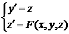. (12.3)
Краевые условия (2) заменим начальными y(a)=ya, z(a) = w (12.4), где - параметр задачи, который нужно подобрать так, чтобы решение задачи Коши (3), (4) совпало с решением краевой задачи (1), (2).
Задача (1),(2) сводится к решению задачи Коши для системы уравнений (3) с начальными условиями (4). Искомое значение параметра находится из условия y(b,w✳)=yb .
Для решения задачи (3),(4) используем метод Рунге-Кутта второго порядка точности .
Для системы общего вида 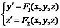
формулы Рунге-Кутта записываются, например, следующим образом :
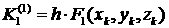,,
,
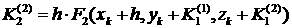 , (12.5)
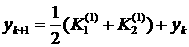 ,.
Задачу (3),(4) решаем по следующему алгоритму:
1. Используя формулы (5) с различными значениями параметра w определяем интервал (w-,w+) , в котором должно находиться искомое значение w✳. Величины w- и w+ подбираются так, чтобы выполнялись условия y(b,w-) < yb, y(b,w+) > yb
. (12.6)
2. Уточняем w✳ делением интервала (w-,w+) пополам до достижения правого граничного условия с заданной точностью: |y(b,w✳) - yb| < ε.
При этом выбираем всегда ту половину отрезка в качестве нового интервала, (w-,w+) для которой выполняется условие (6).
Пример для самостоятельного решения.
Найти решение уравнения 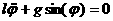, описывающего нелинейные колебания маятника, l – длина маятника , l =10, g - ускорение свободного падения, g =9.81 м/сек2,
φ -угол отклонения от вертикали, - π ≤ φ ≤ π .
Решение должно удовлетворять краевым условиям
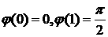. (12.7) Уравнение привести к системе
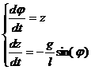. (12.8)
Требуется определить какую скорость должен иметь маятник в точке равновесия φ = 0 в момент t = 0, чтобы в момент t = 1 он отклонился на угол 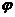 = 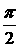.
Краевые условия (7) заменить на начальные (0)=0 , z(0)=w с неизвестным параметром w и решать задачу предложенным выше алгоритмом.
12.2. РЕШЕНИЕ ЛИНЕЙНЫХ КРАЕВЫХ ЗАДАЧ С ИСПОЛЬЗОВАНИЕМ МЕТОДА ПРОГОНКИ
Рассматривается линейная краевая задача вида:
p(x)y′′ + q(x)y′ + r(x)y = f(x), x ∈ [ x0, X]
α0 y(x0) + α1 y′(x0) = A; (13.1)
β0 y(X) + β1 y′(X) = B.
Выбираем систему равностоящих узлов xi= x0+ih , i=0,…,N с шагом
h=(X- x0)/N.
В каждом внутреннем узле xi, i=1,…,N-1 заменяем дифференциальное уравнение конечно-разностным,
применяя центральную аппроксимацию производных
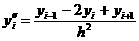,
.
Производные в граничных условиях заменяем, используя левую и правую аппроксимацию
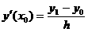,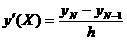
В результате получаем систему алгебраических уравнений вида (2). Решаем ее методом прогонки ,
задав значение N=10,20.
Для оценки погрешности решения краевой задачи (1) в точке применяем правило Рунге
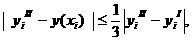, где y( xi) - значение точного решения краевой задачи (1) в точке xi, а y′i и y′′i значения приближенных решений в той же точке, полученных для N и 2N соответственно.
Если заданная точность не достигнута, удваиваем число точек.
Прогонка – метод решения систем линейный алгебраических уравнений.
1. Система уравнений:
B0 y0 + C0 y1 = F0 , B0 ≠ 0
Ai yi-1 + Bi yi + Ci yi+1 = Fi , i = 1,...,N-1 (13.2)
AN yN-1 + BN yN = FN , BN ≠ 0
2. Метод решения полученной системы - прогонка.
Прямой ход:
L0 = - C0 / B0, K0 = F0 / B0;
для i =1,…,N-1 вычисляем
Li = - Ci / r, Ki = (Fi - Ai✳Ki-1)/r,
где r = (Bi + Ai✳Li-1).
Обратный ход:
yN = (FN - AN✳Ki-1) / (BN + AN✳LN-1),
для i = N-1,…,0 вычисляем
yi = Li yi+1 + Ki.
Пройти тест
|